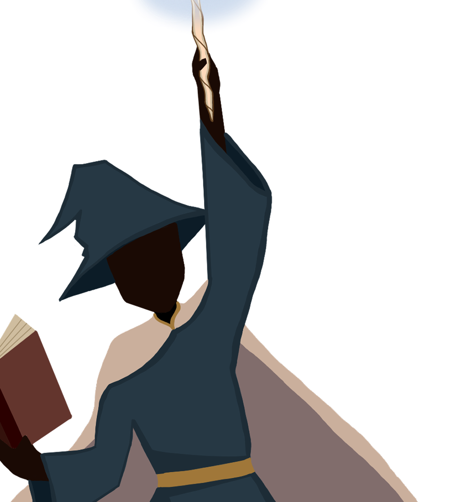
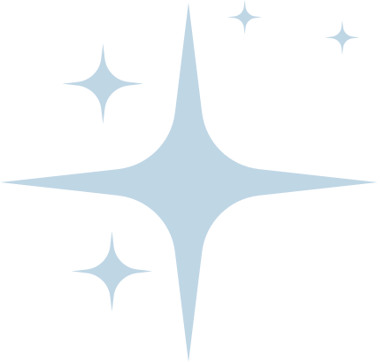
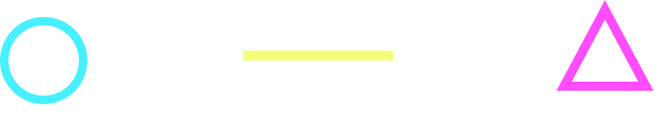
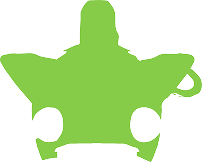
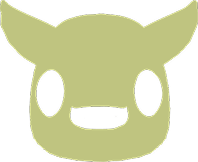

Cargando…
♪ Haz clic para activar el sonido
Efectos: enemigos, runas, aciertos y botones
Tecla M: silenciar todo
Defiende la torre dibujando runas en el aire. Cada enemigo tiene su runa específica

Vence al orco
Vence al cangrejo
Vence al demonio


Tolerancia: 12°
Detección: no la veo (0%)
Si se resaltan cosas del fondo, baja la tolerancia o elige un color que no esté en el fondo. Si la punta se pierde, súbela.
Hay otras cosas de ese color en la imagen: baja la tolerancia o quítalas del fondo.
Pausa
Puntaje: 0
Oleada: 1
Fin de la partida
Puntaje: 0
Oleada: 1